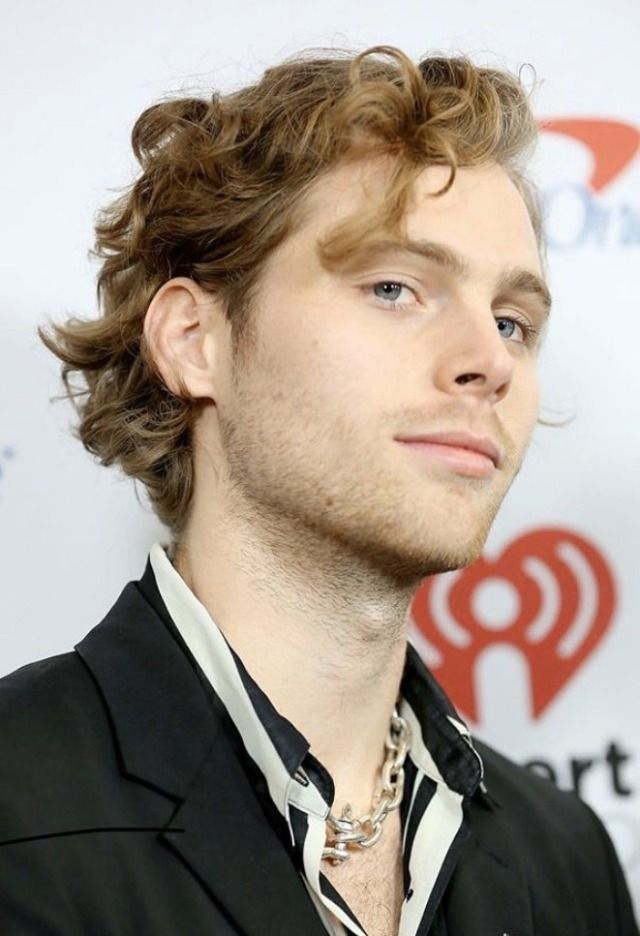
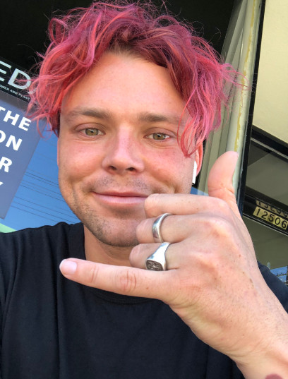
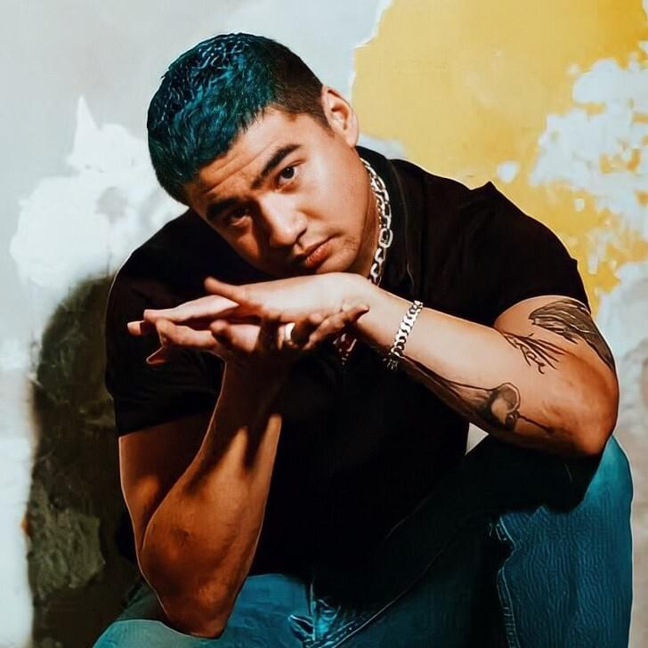
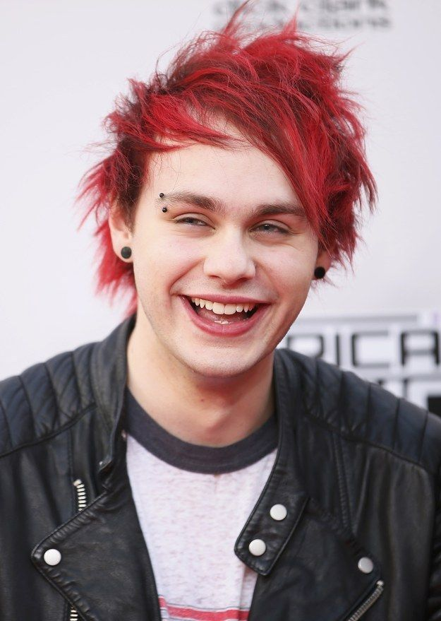

Luke Hemmings
|  | Nació el 16 de julio de 1996. Mide 1,94 y tiene dos hermanos mayores, Ben y Jack. El compositor, cantante y guitarrista comenzó allá por el año 2011 haciendo covers en Youtube con el usuario Hemmo1996. La primera canción que publicó fue de Mike Posner, concretamente una cover de “Please do not go”. |
Ashton Irwin
|  | Irwin nació el 7 de julio de 1994 en Hornsby, Nueva Gales del Sur. A finales del 2011, Irwin recibe un mensaje de Facebook de su amigo y futuro compañero de banda, Michael Clifford, preguntando si estaría interesado en hacer música casualmente con él, Luke Hemmings y Calum Hood. Irwin aceptó, uniéndose al trío para subir versiones de canciones en el canal de YouTube de Luke, formandose así la banda 5 Seconds of Summer. |
Calum Hood
|  | Se crio en Mount Druitt, Nueva Gales del Sur. Su padre es un ex-empleado de Coca-Cola y su madre trabajaba en la industria de jubilació. . Calum señala que su infancia fue de clase media y "no tan glamorosa". Conoció a Michael Clifford en tercer grado y se hizo amigo de Luke en séptimo grado, cuando interpretaron una versión de Secondhand Serenade en un concurso de la escuela. |
Michael Clifford
|  | Estudió en el colegio Norwest Christian College de Riverstone, en los suburbios del noroeste de Sídney. En este colegio privado, donde a los alumnos se les enseña música a fondo desde muy temprana edad, es donde Michael conoció a sus actuales mejores amigos y compañeros de banda: Luke Hemmings y Calum Hood. Hay quienes creen que iban a distintos cursos pero lo cierto es que iban al mismo, ya que Michael es solo unos meses más grande que Luke y Calum. |